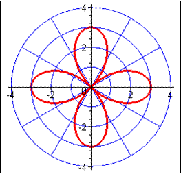

Polar Coordinates
| |r| - magnitude (length) of radius polar coordinates - is in the form $(r,θ)$ pole - a fixed point O polar axis - a horizontal ray directed toward the right from the pole |
| If r is positive, θ is angle in standard position | If r is negative, θ is angle of opposite in standard position |
|---|---|
| Polar Equation | Polar Graph |
|---|---|
| $r=3\cos2θ$ |  |